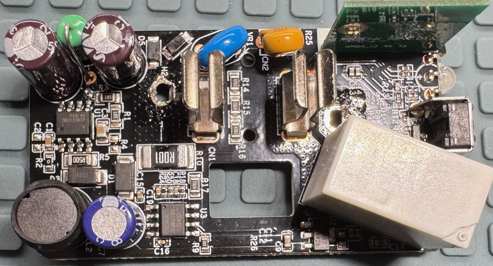
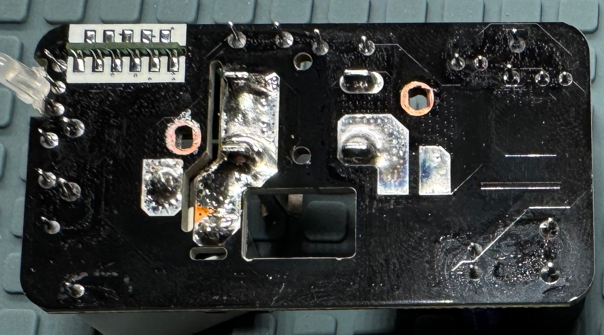
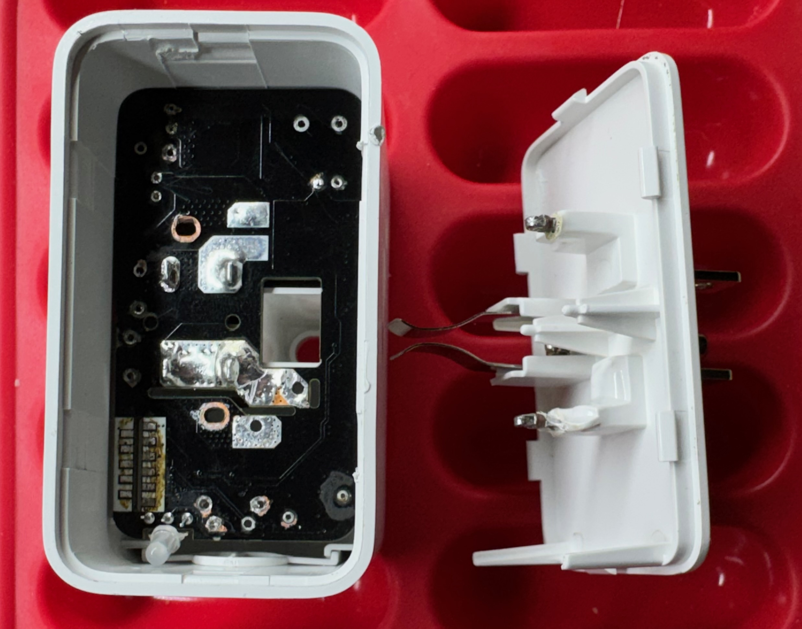

This first one is a teardown I did of a smart switch I bought that uses matter and thread.   
Here is a KiCAD 9.x project with a reverse engineered schematic and PCB layout for this hardware.
KiCAD is an open source and free electronics design CAD program. See here for more information or to download.